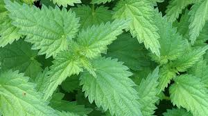
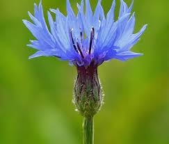

Aloe

Aloe vera is commonly known as a topical gel used to treat sunburn. Promisingly, it may also provide other health benefits, largely due to its antioxidant properties. Preliminary research has indicated that aloe vera may benefit your skin, dental, oral, and digestive health. It may even improve blood sugar control. The Aloe vera plant has been used for thousands of years to heal a variety of conditions, most notably burns, wounds, skin irritations, and constipation.
For growing aloe indoors, place in bright, indirect sunlight. For growing outdoors, ensure aloe is lightly shaded to protect it during the hottest times of the day. Covered patios and porches are great places to grow aloe during warm seasons. Plant in fast-draining Miracle-Gro Cactus, Palm & Citrus Potting Mix. The ingredients of the gel-like plant juice have a widely proven positive effect on our skin. If you want to harvest Aloe vera, it is best to use two- to three-year-old plants and cut the leaves at the base of the stems with a clean, sharp knife.
Nettles
General Uses. Stinging nettle has been used for hundreds of years to treat painful muscles and joints, eczema, arthritis, gout, and anemia. Today, many people use it to treat urinary problems during the early stages of an enlarged prostate. Natural herbs for women like nettle leaf or stinging nettle can optimize and balance hormones for optimal health, giving you great skin and hair as well. Stinging Nettle or Nettle leaf is a common plant, its leaves can cause itching and a temporary discomfort hence earning it a lot of bad press. This tea is great for new mothers, to improve milk supply for their infants, but should avoid during pregnancy, as it may cause uterus to contract. It's rich in vitamin C.
Nettles are definitely the best in spring when they are young and tender. Cut them early on as soon as they get 6 or 8-inches tall; this is a perfect spring tonic and delicious, nutritious food. Then harvest them a second time in late spring–most sources recommend harvesting only the tops which are the most tender.
Cornflower
The dried flowers are used to make medicine. People take cornflower tea to treat fever, constipation, water retention, and chest congestion. They also take it as a tonic, bitter, and liver and gallbladder stimulant. Women take it for menstrual disorders and vaginal yeast infections.Cornflower water's great for blemishes, particularly acne-prone skin. Soothing and anti-inflammatory, it calms and reduces red patches on sensitive skin. A few drops on a cotton pad is all it takes! Finish off by applying a moisturiser. The plant's medicinal value lies primarily in its anti-inflammatory properties. Taken internally as an herbal tea, it is thought to aid in soothing stomach ulcers, while rinsing with the tea is used to speed the healing of sores or bleeding gums in the mouth. Furthermore, cornflower floral water aids in the relief of sunburns and skin problems. To cure common disorders such as tissue inflammation, skin irritation, pain, rheumatism, and infections, add the blossoms to a soothing herbal bath. A strong tea made from the flowers can be used as a wash to help get rid of dandruff or used topically for effectively washing out minor wounds. It is also used, often with great success on mouth ulcers. A strong tea made from the flowers can be used as a wash to help get rid of dandruff or for soothing eczema. The petals are often included in cosmetics for their benefits. This is a great herb to add to a relaxing herbal bath. The petals are also highly nutritious and are especially rich in the minerals that help to improve hair, skin, and nails.
Rose
This flower supports the body's natural collagen production, which is basically our body's protein responsible for healthy skin, hair, and nails. Loaded with tons of antibacterial and anti-inflammatory properties, roses can also help reduce breakouts and calm skin conditions such as rosacea and eczema. The medical benefits of roses include the treatment of inflammation, diabetes, dysmenorrhea, depression, stress, seizures, and aging. Water and extracts obtained from the petals and flowers of various rose species are used for antioxidant, anti-irritant, and skin-conditioning. Rose oils and waxes have moisturizing benefits. Not to mention, any product that contains a rose ingredient has a delightful scent. It's nutrient-rich, astringent, diuretic and anti-inflammatory and also used for uplifting the spirits, for grief, PMS, upset tummy, sore throats, colds and during the menopause. Roses can be used in tinctures, glycerites, teas, honeys, oxymels, syrups, vinegars and hydrosols, as a flower remedy and an essential oil.
All roses grow best in full sun with moist, well-drained soil rich in organic matter. However, even when planted against a north wall (meaning no direct sunlight) roses can still perform well. Roses prefer slightly acidic soil (6-7 pH). The best time to harvest rose petals is mid-summer. Collect the petals on a dry morning. Gently pull off the petals, leaving behind the calyx of the rose. Dry on a tray in a warm, airy room or at a low heat (about 34°C/93°F) in a food dehydrator.